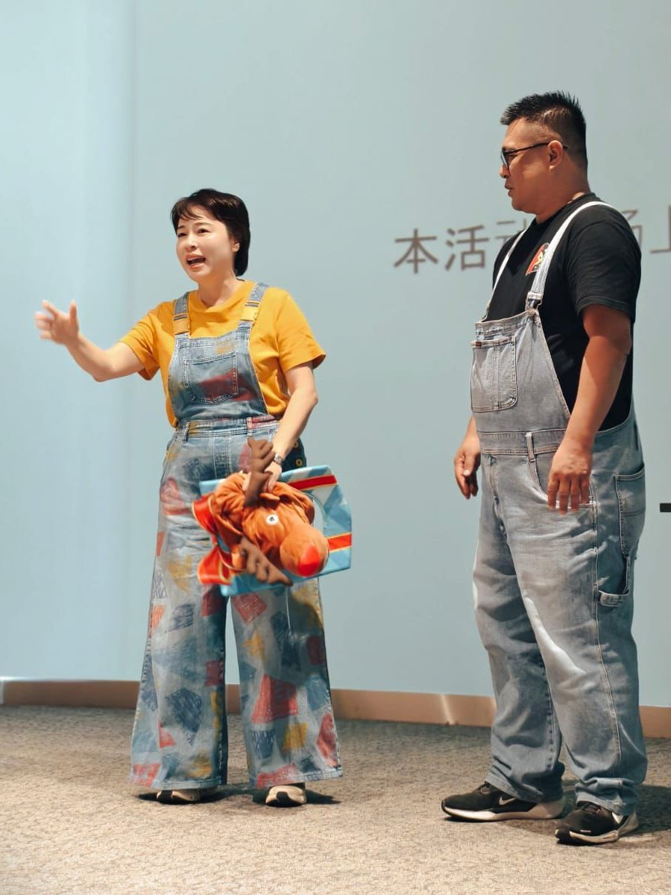
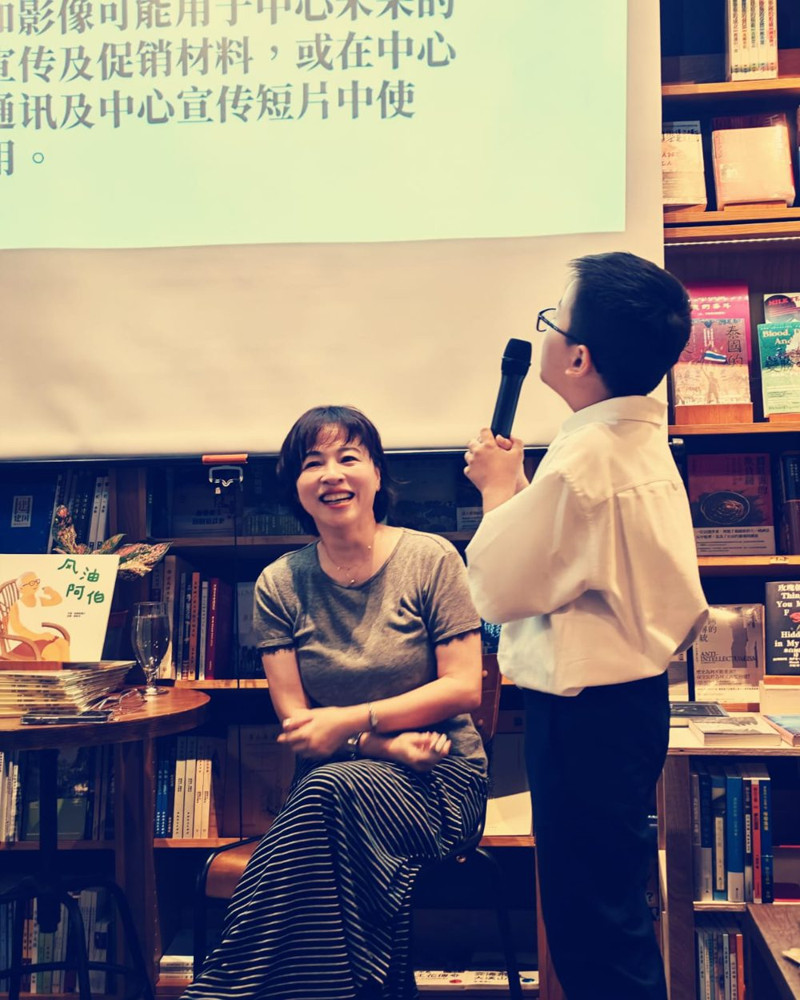
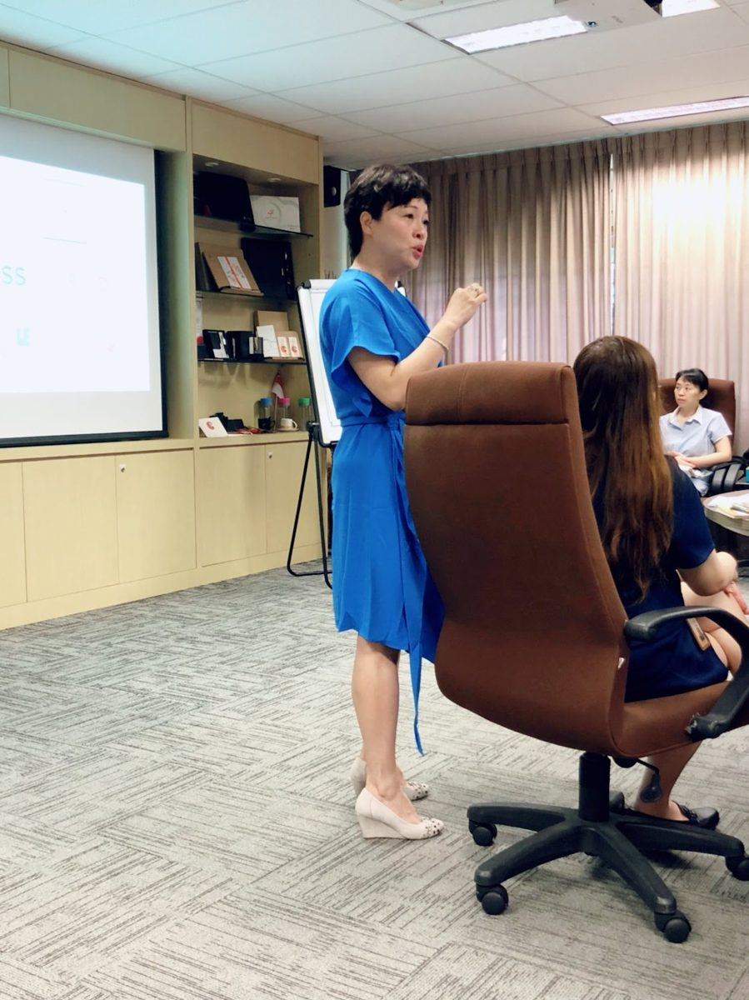
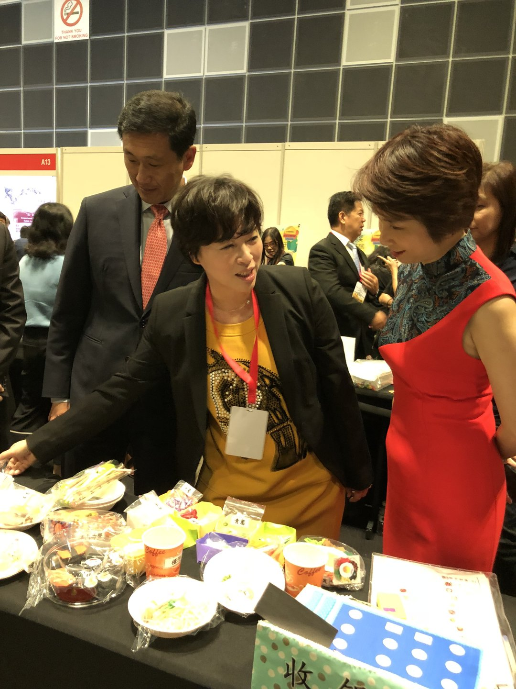
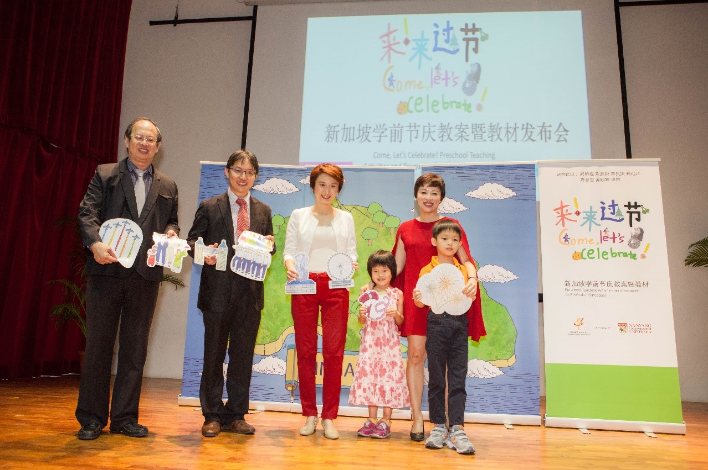
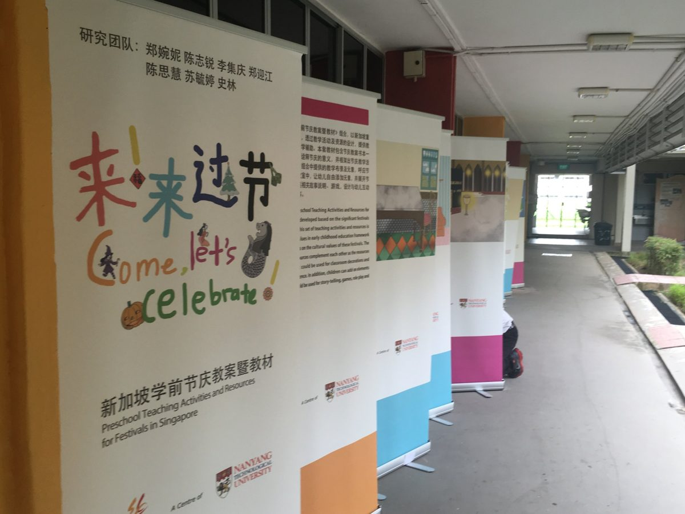
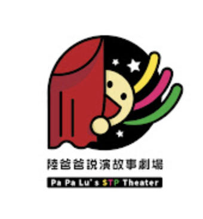
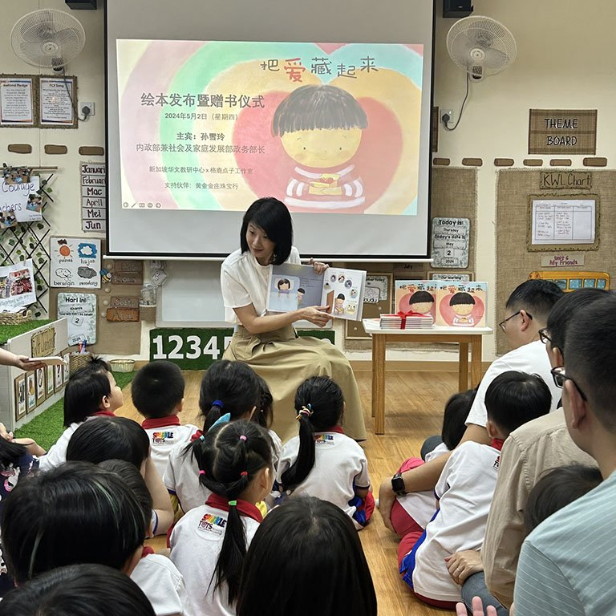
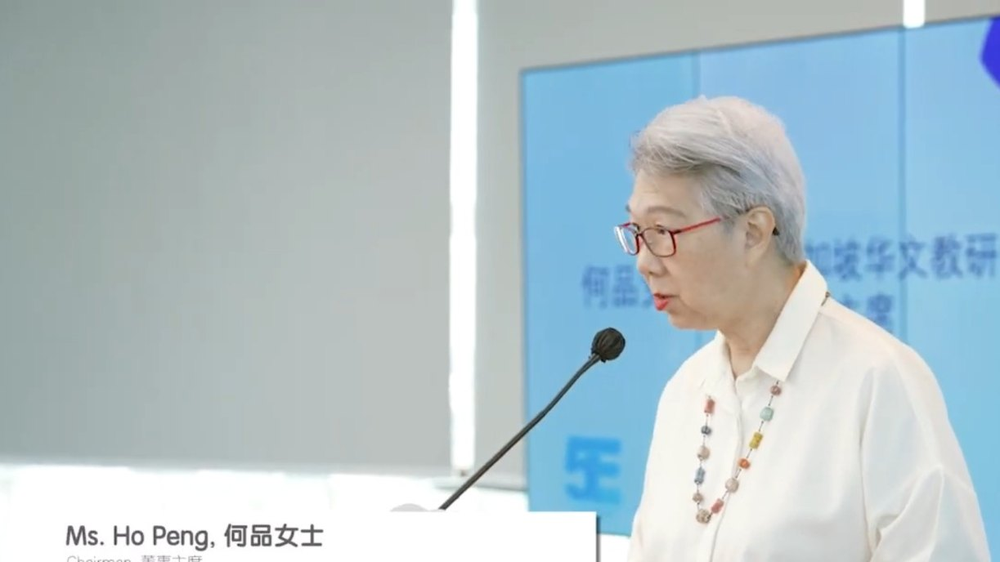

新加坡幼小华文阅读
与儿童发展专家
Child Development & Early Chinese Reading Specialist, Singapore
从一本绘本出发，延伸到游戏、戏剧与学习环境，让孩子在新加坡的生活里读懂华文。儿童文学作家、学前华文师资培育者，长期推动新加坡学前华文教育的在地化。
- 30年幼教经验
- 30+本著作与教材
- 3本入选国家图书馆书单
- 19集电视访谈
- 5届全国学前教具比赛
代表专长
Signature work幼儿教育Early childhood education, birth to eight
深耕幼教三十年，以 0 至 8 岁的儿童发展为根基，涵盖幼儿园课程与教学、节庆教学与全园活动、教具设计、个案教学与幼儿园危机管理。在新加坡率先将学前节庆教学系统化，并推动学前华文教具比赛，在台湾与新加坡培育幼教师资。
幼小华文阅读与幼小衔接Chinese reading and the move from preschool to primary
提出“阅读生态系”的概念：阅读不止于老师提问，而是从绘本延伸到自主戏剧与游戏、桌游与延伸活动，并包括老师在故事角与环境上的事前准备。关注学前到低年级的阅读如何自然衔接，并陪伴孩子、家长与老师走过从幼儿园到小一的转变。
华文教育的在地化Localising Chinese-language education
新加坡的学前华文老师许多来自海外。在地化不是教几样本地符号，而是理解组屋、巴刹与本地华语里的生活与价值，让课程真正属于新加坡的孩子。
儿童体验设计、成瘾设计与儿童行销Experience design, addictive design and marketing to children
研究儿童流行文化、儿童手机游戏与媒体组合，以及儿童消费行为与儿童行销，从儿童发展的角度检视产品、游戏与行销如何吸引孩子，又应如何保护孩子。曾任台湾与日本游戏公司的儿童产品开发顾问。
故事力与沉浸式说演设计Story-building and immersive storytelling design
郑博士的故事力不只在“讲”故事，更在于“建构”故事。她以“故事九宫格”引导教师、家长与孩子一步步搭起完整的故事，把叙事能力化为可以教、可以练的方法；她的演讲之所以引人入胜，也来自这份把内容组织成故事的能力。她在新加坡首创沉浸式游戏亲子故事说演，以现场游戏剧本设计故事：全场孩子不只是听众，而是走进故事，在游戏与戏剧中一起推动情节。
阅读生态系
郑博士为新加坡学前华语文教室提出的阅读概念架构：阅读不止于老师提问，而是由四项要素共同滋养、围绕孩子展开的一整套经验。
- 阳光语文载体：静态与动态的儿童文学，包括绘本、影片与游戏文本。
- 土壤引导准备：讲述之前的准备，包括故事篮、小物件、布置与语言提示。
- 水互动阅读的历程：讲述、游戏、提问与理解。
- 空气延伸活动：安静存在于教室环境中的活动，如绘本桌游、评量小游戏与小手作。
四者缺一，阅读便难以生长；四者的比重，也随幼儿年龄而调整。
工作论文：郑婉妮（2026）。阅读生态系：新加坡学前华语文教室的概念架构（工作论文 v1）。Zenodo。https://doi.org/10.5281/zenodo.24365878
关于郑博士
About郑婉妮博士是幼儿教育专家，以 0 至 8 岁的儿童发展为根基，现任南洋理工大学新加坡华文教研中心学前部主任兼高级讲师。她在台湾与新加坡从事幼教工作超过三十年，几乎教遍幼教师资培育的各门课程。
她的学士与硕士皆主修儿童福利，因此看待幼儿教育始终从儿童的权益与福祉出发，也关注家庭与需要额外支持的孩子。她曾任台湾家庭教育服务中心咨商辅导专员，长期接触儿童、青少年及其家庭。
在台湾，她参与幼保系的课程规划、课程委员会与实习委员会，熟悉师资培育的完整养成；2015 年起深耕新加坡的双语与华文幼教，也为中国及华语地区的幼教机构提供培训与交流。她同时是散文作家与儿童文学作家：早年常在台湾报刊发表教育社论与散文，散文《驻外》获两岸交流纪实文学奖优选，并出版短文集《纷沓》《爱情行上学》；来到新加坡后，出版三十余本绘本、教学专书与大学教材。
- 现职
- 南洋理工大学新加坡华文教研中心 学前部主任、高级讲师
- 中心高层管理委员会（SMC）成员（2015 起）
- 兼任
- 新跃社科大学 学前教育兼任讲师
- 咨询
- 国家图书馆管理局 华文咨询委员（2020 起）
- “新加坡可爱动物”绘本系列顾问（云树出版社，李光耀双语基金支持，2024）
- 学历
- 国立屏东教育大学 教育行政研究所 博士（2012）
- 中国文化大学 儿童福利研究所 硕士（1996）
- 静宜大学 青少年儿童福利学系 学士（1994）
- 曾任
- 香港中文大学 名誉副教授（2015–2017）
- 台湾中华医事科技大学 助理教授、儿童发展中心主任
- 台湾家庭教育服务中心 咨商辅导专员
- 台湾经历
- 全国性儿童福利专业人员、保母专业训练及园长领导与管理培训 讲师
- 教育部幼儿教保核心专业课程 讲师
- 技专校院统一入学测验“儿童福利”科 命题委员
- 鈊象电子 儿童游戏、卡牌与玩具顾问
- 台湾幼儿园传染病危机管理 顾问
- 获奖
- 《把爱藏起来》入选国家图书馆管理局《9岁前必读的120本绘本（2025版）》及 SG60《60本新加坡好书推荐》《啊！驯鹿要请假？》入选国家图书馆管理局《12岁前必读的100本新加坡读物》《圣诞老人的人字拖》入选国家图书馆管理局《12岁前必读的100本新加坡读物》《玩物志》入围 2020 新加坡书籍奖（Singapore Book Awards）最佳教育类书籍
专业领域
Expertise · 0–3 · 3–6 · 6–8 岁幼儿课程与教学
- 幼儿园课程设计与教学熟稔幼儿园各类课程模式之理念与实施，尤长于主题课程、方案教学及学习区课程（含区中区）之规划与实施
- 游戏式与探究式学习以游戏与探究为核心的学习理论与教学实务，探讨教师由主导到支持的角色转换，以及幼儿在游戏中建构知识的历程
展开看全部收起
- 师幼互动与提问师幼互动质量的理论与实务，涵盖提问设计、回应策略与鹰架引导
- 节庆教学与全园活动企划节庆课程的系统化设计，以及由课室教学延伸至全园活动的规划与实施
- 语文区“区中区”深度沉浸学习规划与布置将语文区细分为聆听、说故事、阅读、书写等区中区，营造让孩子深度沉浸的华文学习情境
儿童发展与学习
- 婴幼儿发展与保育0–3 岁婴幼儿发展与保育，关注依恋、气质与照护互动
- 价值观、社交情绪能力与学习品格幼儿社会情绪学习与品格发展，包括情绪调节、人际关系、心理韧性及好奇、坚持等学习品格
展开看全部收起
- 幼儿行为解码与回应幼儿行为辅导的理论与策略，从行为背后的需求理解孩子，并以 3R、3S 回应式互动加以支持
- 语言发展与早期读写语言习得、双语发展与萌发读写的理论与教学
- 幼小衔接幼小衔接的理论与实务，涵盖学习准备、生活适应、社会情绪支持，以及家长与教师的协作
- 特殊需求与融合教育融合教育与差异化教学，关注高敏感儿童、阅读障碍等特殊需求
华文教学与儿童文学
- 绘本教学与阅读生态系绘本教学的理论与实务；以自创的“阅读生态系”架构，整合语文载体、引导准备、互动阅读与延伸活动四项要素
- 故事力与叙事能力建构儿童叙事能力的发展与教学；以自创的“故事九宫格”理论，引导儿童构思并说出结构完整的故事
展开看全部收起
- 沉浸式游戏亲子故事说演结合游戏与故事说演的沉浸式设计，将家长一同带入故事现场，使华语在亲子互动中自然生成，并延续至家庭生活
- 儿歌、童诗与语言游戏儿歌与童诗的赏析、改编与创编，结合律动与语言游戏的语文教学
- 儿童文学与绘本创作儿童文学理论与赏析、在地绘本创作；以自创的“故事创作三阶法”，从故事构思发展至绘本完成
儿童福利与家庭
- 儿童福利学儿童福利的理论与政策，涵盖儿童权益、儿童保护，以及以儿童福祉为本的幼儿教育
- 家庭教育与亲职教育家庭教育与亲职教育的理论与实务，涵盖教养观念、亲子沟通与家庭冲突
展开看全部收起
- 亲子共读与家庭语言环境家庭读写环境与亲子共读，探讨如何在家中支持孩子的华文学习
- 亲师沟通与家长合作家园合作的理论与策略，以正向沟通建立亲师伙伴关系
- 儿童与家庭咨商辅导儿童与家庭咨商辅导的理论与实务
游戏、教具与儿童体验设计
- 桌游设计与游戏教学游戏设计与游戏教学，以绘本桌游培养幼儿的语言力与社交力
- 教具设计与教学资源华文教具与教学资源的设计原理、制作与教学运用
展开看全部收起
- 游戏自主性儿童自主游戏的理论与实务，探讨幼儿在游戏中的自主选择、自我调节，以及教师的支持角色
- 儿童体验设计以儿童发展为本的体验设计，涵盖儿童文化设计与绘本等儿童文化产品
师资培育与园所经营
- 教育评鉴与专业指标建构大学与幼儿园教育评鉴、课程与教学评鉴，以及专业指标的建构方法；以德尔菲法等研究方法发展华文教师专业能力指标，作为师资培育与专业发展的依据
- 教师专业成长与职业倦怠教师专业发展与心理调适，涵盖情绪、自我激励与跨文化适应
展开看全部收起
- 师资培育与实习辅导幼教师资培育的课程规划、实习辅导与现场教学评量
- 幼儿园领导与团队经营幼儿园领导与组织管理，着重回应式团队与跨语文教师协作
- 教育行政与规划教育行政理论与园务规划
- 幼儿园危机与卫生管理幼儿园危机管理与传染病防治
开创与实践
Initiatives- 2026 起
倡议并支援园所客制化深度培训
郑博士倡议幼儿园教师的专业发展应回到园所的真实需要，并由具专业背景的人士，从专业观察与理论的角度切入，避免流于同侪分享或重复的内部讲话，使研习时数真正转化为教师的专业成长。许多幼儿园与大型幼教集团愿意为此投入，她便走进园所访谈与观察，厘清教师当前面临的难点，再依据机构、教师与政策三方面的需要设计培训；每场五至七小时，与机构深入扎实地探讨，现场与理论结合，让教师在实作与相互学习中浸润其中。她也关注专业成长的公平，为所有老师提供不问身份、都能参与的专业成长平台。
- 2025 起
深化并推广阅读生态系
将多年以绘本、故事说演与延伸活动累积的实践，系统化为“阅读生态系”：以绘本为核心，从故事环境、教师讲述到延伸活动与学习环境，围绕儿童展开阅读经验；并由学前延伸至低年级，走向全方位、无压力的深度华文学习。
- 持续
广邀各地专家，引入多元幼教视角
持续邀请世界各地的华文幼儿教育专家与学者来到新加坡交流分享，为本地幼教注入不同的视角。郑博士重视学术观点的多元，避免同质化，让新加坡的学前华文教育在对话与碰撞中持续成长。
- 持续
走进社区
带领郑小瓜故事团走进图书馆、学校与社区，以阅读生态系的概念设计沉浸式游戏亲子故事说演，并为资源较少的家庭提供公益工作坊，以绘本、说故事与语言游戏陪伴孩子与家长。
2024.09 《小小拇指》中秋亲子工作坊：“长鹅”与“嫦娥”沉浸式游戏亲子故事说演（现场短片） 相关媒体报道（点击阅读原文）：2024.09 《联合早报》〈《小小拇指》欢庆中秋 亲子工作坊助孩子认识传统节日〉
- 持续
学位课程建构与著述
参与建构新跃社科大学幼儿教育与华文教育学士课程（BECCE）的课程架构，并督导由中心承担的课程，历年所有课程教材均经她审改；亲自撰写儿童文学、社交情绪、多元文化与双语教育等大学教材，2027 年推出全新改写的《学前特殊儿童教育》。十年间出版三十余本绘本、教学专书与大学教材，著述未曾间断。
- 持续
政策跟进与专业咨询
长期追踪新加坡学前教育与母语教育政策的发展，包括幼儿培育署的课程框架与融合教育政策，并将之转化为师资培训、课程与教材；现任国家图书馆管理局华文咨询委员（2020 起），并持续受政府机构、出版社与媒体咨询，就幼儿教育与华文学习议题提供专业意见。
- 2019 起
以原创绘本深耕在地化
自《烟囱在哪里呀？》起，每年推出一本以新加坡为场景的圣诞绘本，并主持新小瓜儿童绘本系列与李光耀双语基金支持的 5E 绘本系列，把组屋、红头巾与本地华语写进孩子的阅读经验；多本入选国家图书馆管理局推荐书单。

2025.12 《我要我的屁屁驯鹿！》新书发布会暨沉浸式游戏亲子故事说演，与陆育克老师合演（中央公共图书馆） 
2026.09 《风油阿伯》新书发布会（草根书室），郑博士与小读者对谈 相关媒体报道（点击阅读原文）：2023.06 《联合早报》〈发挥设计巧思 说好绘本故事〉；2019.12 《联合早报》〈圣诞老人组屋送礼奇遇记 编成富本地特色华文绘本孩童更着迷〉
- 2018 起
创办学前华文教具比赛
每届一个主题：生活材料、桌游、故事板、本地华语绘本、绘本×桌游。每一届整理成书，累积在地的教学资源。比赛为老师们打造公平参与的平台：所有幼儿园都能参赛、得奖机会均等，历届决赛评审均由新加坡幼儿教育学术单位、图书馆与非机构从业相关专家担任。

2018.03 首届幼儿华文教具制作比赛发布会，郑博士讲解比赛理念 
2018.09 首届比赛教具展现场，郑博士向时任教育部长王乙康（左）与教育部高级政务次长刘燕玲（右）介绍参赛教具 相关媒体报道（点击阅读原文）：2018.03 《联合早报》〈幼儿华文教具制作比赛 日常生活材料可派上用场〉
- 2016 起
节庆教学的系统化
以《来！来过节》为起点，为新加坡各族群的节日编写学前教案、评量与教学资源，率先将学前节庆教学系统化，并由课室教案延伸至全园活动企划。

2016.06 《来！来过节》新加坡学前节庆教案暨教材发布会，由教育部兼贸工部政务次长刘燕玲主持（图：新加坡华文教研中心） 
2016.06 发布会当天会场外的《来！来过节》展板 相关媒体报道（点击阅读原文）：2016.06 《联合晚报》〈华文教研中心推出本地节庆教材〉；《联合早报》〈让孩童了解各族节庆拉近距离〉；The Straits Times〈Teaching kids Chinese through local culture〉
- 2016
提出“新任幼儿华文教师在地化培训课程”
撰写并向幼儿培育署（ECDA）提出课程方案，首次把“文化调适”带进新加坡学前华文师资培训。
- 2015
出任南洋理工大学新加坡华文教研中心学前部主任
受聘为南洋理工大学新加坡华文教研中心学前部主任兼高级讲师，主持学前部的课程创新、师资专业发展与学前华文教育研究。面对不同的语言政策与学前体制，她将台湾的专业重新置于新加坡的语境中检视，并以学前华文教师的跨文化调适为题展开研究；此一经验成为日后推动学前华文教育在地化的起点。
- 1997–2015
台湾幼教现场的十八年：从课程到园所经营
1997 年起任教于台湾中华医事科技大学幼儿保育系，历任讲师、助理教授，2001 至 2003 年兼任儿童发展中心主任，2013 至 2014 年出任招生联合服务中心主任。参与幼保系系务的创建，召集学生实习委员会与课程发展委员会，规划并创办学校附设幼儿园，亦参与教育部技专校院评鉴；同时长期为台湾多所幼儿园提供经营管理、课程与教师专业发展的辅导。其间担任全国性儿童福利专业人员、保母与园长培训讲师及四技二专统一入学测验命题委员，并主持教育部、内政部补助的托育与儿童福利研究案。十八年间横跨师资培育、园所辅导、行政与研究，奠定其理论与实务并重的幼教实践者根基。

著作
Books新跃社科大学幼儿教育与华文教育学士课程（BECCE）中由本中心承担的课程，历年教材均由郑博士督导与审改。
演讲与媒体
Talks & media2026.09 第八届“华文作为第二语言之教与学”国际研讨会上，与教育部长李智陞等共同发布《绘芽集》（点击看照片）
主题演讲
- 〈Reimagining Santa Claus in a Tropical Asian City: Cultural Codes of Childhood in Singapore Picture Books〉，俄罗斯南方联邦大学（Southern Federal University）国际学术会议“Child in the World of Culture: Values and Meanings”（线上受邀发表）
- 〈儿童文化设计 × 5E 框架：打造支撑儿童能动性的阅读宇宙〉，苏州大学“让儿童成为太阳——新幼教国际学术会议”专题演讲
- 〈凝观故事的根，行走文化的路：从本地绘本看新加坡学前华文教育的想象与实践〉，新加坡学前教育论坛（SUSS）
- 〈从烟囱说起：新加坡绘本创作中的文本在地化历程〉，第十五届亚洲儿童读物节（AFCC）
- 〈绘本的厚度：从绘本出发的新加坡本土化思考与尝试〉，第七届华文作为第二语言之教与学国际研讨会
- 〈心坎里的绘本：绘本创作的儿童发展元素〉，亚洲儿童读物节（AFCC）
- 〈后疫情时代的幼儿园教室〉〈疫情下的游戏转变：桌游新章〉，第六届华文作为第二语言之教与学国际研讨会
- 〈新加坡学前华文教师跨文化适应之探讨〉，第五届华文作为第二语言之教与学国际研讨会
- 〈新加坡华文职场现状及华文教师的跨文化适应〉，开拓华语文教育产业海外市场需求计画（台北）
- 〈溯源追本：新加坡幼儿教育发展轨迹〉，2017 百年幼教论坛暨国际学术研讨会（高雄）
- 〈数位科技与儿童〉，2016 百年幼教论坛暨学术研讨会（高雄）
沉浸式游戏亲子故事说演
- 《我也要去！》新书发布会暨沉浸式游戏亲子故事说演（中央公共图书馆，下午两场，与陆育克老师合演）
- 《我也要去！》圣诞快闪暨沉浸式游戏亲子故事说演（友谊书斋，与陆育克老师合演）
- 南洋小学阅读嘉年华“童话之夜——圣诞历险”特别嘉宾：走进童话·玩出阅读·一起冒险
- 《我要我的屁屁驯鹿！》新书发布会暨沉浸式游戏亲子故事说演（中央公共图书馆，与陆育克老师合演）
- 华助会（CDAC）亲子阅读嘉年华：带领教师团队说演双语故事，约 200 个家庭参与
- 《啊！驯鹿要请假？》圣诞新书发布会暨沉浸式游戏亲子故事说演
- 华助会“华文阅读嘉年华”：带领教师团队导读原创绘本（《联合早报》报道）
- 《小小拇指》中秋亲子工作坊：“长鹅”与“嫦娥”故事说演（《联合早报》报道）
- 《神秘的圣诞礼物》圣诞新书发布会暨沉浸式游戏亲子故事说演
- 《想要变胖的圣诞老人》圣诞新书发布会暨沉浸式游戏亲子故事说演
- 《圣诞老人的红头巾》圣诞新书发布会暨沉浸式游戏亲子故事说演
- 《圣诞老人的人字拖》圣诞新书发布会暨沉浸式游戏亲子故事说演
- 《烟囱在哪里呀？》圣诞新书发布会暨沉浸式游戏亲子故事说演

学术研讨会
- 〈绘本中的道具：凝聚幼儿的神奇力量〉，幼儿培育署（ECDA）幼教研讨会
- 〈与自然共舞：室内外光影游戏〉，ECDA 幼教研讨会
- 〈华语跑跳碰：室内体能游戏篇〉，ECDA 幼教研讨会
- 〈新加坡华族幼儿汉字书写发展的个案研究〉（与郑迎江、谢锡金合著），第八届汉字与汉字教育国际研讨会（东京）
- 〈教学活动的构思：反思新加坡学前节庆教材的构思与设计〉（与陈志锐、陈思慧、苏毓婷合著），新跃大学幼教研讨会
- 〈有限布幕，无限想象〉，新跃大学幼教研讨会
- 〈新媒体时代下的儿童流行文化〉，2016 百年幼教论坛暨学术研讨会（高雄）
- 〈语言的多元存在：新媒体载体下儿童语言与情感在华文教育中的启示与应用〉，第四届华文作为第二语言之教与学国际研讨会
- 〈新时代新媒体的儿童游戏面貌：质变的儿童游戏〉，世界学前教育组织（OMEP）第 65 届世界大会（上海）
- 〈Media Mix, New Media, and Changes of Children’s Play〉，New Media and Cultural Transformation: Film, TV, Game, and Digital Communication（上海大学影视艺术技术学院、上海纽约大学）
- 〈真实的人生：一段关于幼保系学生理论与实务现场碰撞的学习历程〉，2010 幼儿保育学术研讨会：少子化趋势下教保机构的经营与发展（台南）
- 〈少子化社会形貌下保育人员的新思维〉，2010 幼儿保育学术研讨会（台南）
- 〈儿童休闲的文化观察：假日的恐龙卡〉，运动休闲产业管理暨海峡两岸学术研讨会（建国科技大学）
- 〈儿童集换式卡片游戏现象的内涵与解读〉，旅游健康休闲学术研讨会（国立台北护理健康大学）
- 〈衣柜中的童书：同性家庭儿童读本之分析——以 Is Your Family Like Mine 为例〉，幼儿保育专业发展学术研讨会（台南）
- 〈92 年度台南市儿童生活状况暨福利需求调查研究〉，台南市整合儿童及少年福利资源网络研讨会
- 〈儿童社会地位稳定性之研究〉，跨世纪展望国际学术研讨会（台南女子技术学院）
期刊、专文与散文
- 〈阅读生态系：新加坡学前华语文教室的概念架构〉（工作论文 v1），Zenodo
- 〈绘本里的道具学：宫西达也的超神奇〉，新跃社科大学《新幼跃报》第 2 期，专家特稿
- 巫永森、郑婉妮〈筑梦异乡：新加坡幼儿园学习样貌〉，《台湾教育评论月刊》9 卷 12 期，39–42 页
- 短文集《爱情行上学》（台南：奥普特）
- 短文集《纷沓》（台南：奥普特）
- 散文〈驻外〉，获行政院大陆委员会二十周年“两岸交流纪实文学奖”优选（第二名）；收录于《行政院大陆委员会20周年两岸交流纪实文学暨摄影奖作品集》
- 〈成为优秀的婴幼儿保育人员〉，收于《婴幼儿保育概论》（台北：群英）
- 《幼教资讯》专栏文章十余篇，主题涵盖本土化幼教、托育机构危机管理、教保人员职场与人力资源、童书中的性别多元文化
- 《自由时报》《台湾时报》教育评论，并主持台南市“儿童痛苦指数”调查与发布
受邀讲座
- 《风油阿伯》新书发布会，与南洋理工大学国立教育学院陈志锐副教授对谈，草根书室
- 〈解码与回应：与幼儿积极互动实务指南〉，浙江绍兴幼教培训（95 位一线教育工作者）
- 〈如何用心把心教〉，喜耀华语讲演
- 〈跨文化到本土化的在地生命历程：从教学、课程、教材说起〉，西北师范大学与国立教育学院交流讲座
- 〈幼儿园内的正向沟通〉，人民行动党社区基金会（PCF）学习嘉年华
- 〈能玩能学的小教具〉，新加坡书展
- 〈阅读续航力：从选对幼儿的书开始〉，国家书籍理事会学者论坛
- 〈到新加坡当学前华文老师〉，台湾树德科技大学
- 〈如何创作富有本地色彩的故事〉；〈How Animated Ebooks Could Help Children Learn their Mother Tongue Better: Evidence from an Eye-tracking Study〉，亚洲儿童读物节（AFCC）
- 〈童言童语童话书：绘本的人生轨迹〉，大专阅读节
- 〈学前教师职业倦怠与自我激励〉，PCF 东南区教师学习分享年会
- 绘本阅读与儿童发展、绘本与课室布置、绘本对话与延伸活动，《小小拇指》幼教老师分享会（新达城）
母语学习论坛
- 〈家中的华文游乐场：如何善用场景道具和游戏学母语〉，母语学习论坛 2023
- 〈和孩子一起跑跳碰：语文肢体融合互动游戏篇〉，母语学习论坛 2019
- 〈来！来阅读：营造有益于亲子阅读的家庭环境〉，母语学习论坛 2017
- 〈创设一个轻松自由的华语学习环境〉，母语学习论坛 2016
新闻报道
- 《联合早报》〈李智陞：华文教师须善用科技打造生动学习 但AI绝不能取代教师〉（《绘芽集》发布仪式）
- The Straits Times〈Confusing ‘mum’ for ‘horse’: New book helps Chinese language teachers tackle common errors by pupils〉
- 8world〈将华文绘本变为桌游 四教师团队“寓教于乐”获奖〉
- 8world〈新加坡华文教研中心推出名为《我要我的屁屁驯鹿》的新绘本〉
- 8world〈华助会和推广华文学习委员会携手举办“华助会亲子阅读嘉年华”〉
- 《联合早报》报道：新加坡华文教研中心告别锦茂路，院长符传丰博士、课程主任林义平与学前部主任郑婉妮共同受访
- 《联合早报》〈加入戏剧性“音效” 让亲子阅读更有趣〉（专访）
- Kinderland〈SCCL Launches New Children’s Book to Foster Bilingual Reading〉
- 8world〈华文教研中心推出新圣诞绘本《啊！驯鹿要请假？》〉
- 《联合早报》〈《小小拇指》欢庆中秋 亲子工作坊助孩子认识传统节日〉
- 〈小小拇指与华文教研中心联办中秋欢乐行亲子工作坊〉
- 《联合早报》〈华文教研中心推出绘本 教孩子从日常点滴中理解“爱”〉
- 8world〈新加坡华文教研中心推出新儿童绘本《把爱藏起来》〉
- 《联合早报》〈幼儿华语文教具比赛 幼教教师本土特色绘本夺冠〉
- 8world〈幼儿华语文教具比赛圆满落幕，兀兰学前中心作品胜出〉
- 《联合早报》〈圣诞绘本启发幼儿同理心 感谢服务业员工付出〉
- 8world〈新加坡华文教研中心推新绘本《神秘的圣诞礼物》〉
- 《联合早报》〈发挥设计巧思 说好绘本故事〉
- 《联合早报》〈创新绘本激发幼儿想象力爱上阅读〉
- 8world〈新加坡华文教研中心推出《5E绘本系列》 为幼儿提供不一般阅读体验〉
- 8world〈华文教研中心推出最新儿童绘本《想要变胖的圣诞老人》〉
- 《联合早报》〈《小小拇指》亲子工作坊 制作教具激发孩子学习兴趣〉
- 《联合早报》〈《小小拇指》亲子工作坊：善用教具激发孩童学习兴趣与好奇心〉
- 8world〈《童心说》新书发布会暨桌游擂台〉
- 《联合晚报》〈学前教育专家：13 月大不适合语言教学〉
- 8world〈幼儿华语文教具比赛 《水獭搬家》获首奖〉
- 《联合早报》〈圣诞老人组屋送礼奇遇记 编成富本地特色华文绘本孩童更着迷〉
- 8world〈新加坡华文教研中心创意教学工具新书 提倡华文华语学习〉
- 《联合早报》〈华文教研中心办桌游设计比赛〉
- 《联合早报》〈幼教工作者发挥创意 以日用品自制华文教具〉
- 《联合早报星期天》〈《小小拇指》出版第 100 期 逾百名“小小书迷”同欢庆〉
- 《联合早报》〈幼儿华文教具制作比赛 日常生活材料可派上用场〉
- 《联合早报》〈幼教学者郑婉妮：选对绘本助幼儿自信成长〉
- 《联合早报》〈学前教育专家：绘本扩大孩子心灵空间〉
- 《联合晚报》〈华文教研中心推出本地节庆教材〉
- 《新明日报》〈新教材助儿童认识本地节庆〉
- 《联合早报》〈华文教研中心推出本地节庆教材 让孩童了解各族节庆拉近距离〉
- The Straits Times〈Teaching kids Chinese through local culture〉
- 台湾《联合报》〈写自己的故事…她驻外抱奖〉
- 台湾报章〈华医教师郑婉妮 创作获文学大赏〉
- 台湾报章〈老师写驻外 获奖〉
电视访谈
- 8 频道《狮城有约》：流量越高越可信吗？教你看穿网红资讯背后的真相
- 8 频道《狮城有约》：家长怕输助长补习风气？
- 8 频道《狮城有约》：孩童接触有害网络内容，谁该负责？
- 8 频道《狮城有约·十分访谈》：从小培养阅读习惯
- 8 频道《前线开讲》：熊孩子闹事，该罚父母吗？
- 8 频道《狮城有约·十分访谈》：阻断措施期间，住家成“托儿中心”
- 8 频道《前线追踪》：下一代还讲华语吗？（上、下）
- 8 频道《我在狮城有个家》：台湾“上瘾”教育达人
2016 年至今受邀上 8 频道《狮城有约》《前线追踪》等节目 19 集，以上为代表。
电台与影音
- 158集 958 城市频道
《幼师会客室》节目 - 124,355+次 YouTube
累计观看 - 75,429次单集最高观看
《前线追踪》 - 19次 8 频道
电视节目受访
以下为各主题代表影片，点击即可观看。
育儿与亲子
958 城市频道、8 频道《狮城有约》、96.3 好FM 等节目常客。看全部 158 集 → 幼师会客室 YouTube 频道
专业合作
Work with Dr Cheng欢迎新加坡及海外各地的幼儿园、学校、图书馆、社区机构、企业与基金会洽谈合作，内容与形式皆可依需求规划；亦可先从线上课程认识郑博士的教学。
幼儿园客制化培训
从园所的现场需求出发，量身规划培训。
适合幼儿园、托儿中心、幼教集团的华文教师团队
- 培训前进行园所访谈与参访、教师访谈，厘清教师当前面临的教学难点
- 依需求撰写培训剧本，以团体游戏引导教师实作
- 提供可直接应用于课室的教学工具包
形式半天或全天工作坊，亦可规划系列培训；历来培训回馈多为满分
预约园所培训 →演讲与讲座
结合学术研究与现场经验，提供可带回实践的观点。
适合研讨会与论坛主办单位、学校、教师团体、家长会、图书馆
演讲主题横跨儿童发展、亲子教养、课程教学、华文阅读与园所经营，尤以亲子议题见长；题目可依主办单位需求规划
形式主题演讲、专题讲座、教师研习、家长讲座
邀请演讲或讲座 →沉浸式游戏亲子故事说演·郑小瓜故事团
Dr Cheng’s Storytelling and Play for Families
郑博士以阅读生态系的概念设计故事现场，带领故事团走进活动，让大人与孩子一起听、说、读、玩。
适合图书馆、小学、幼儿园与社区的亲子活动、新书发布会、节庆活动
对象学前至小学低年级的孩子与家长，大型场次曾有约 200 个家庭同场参与
- 郑博士在新加坡首创沉浸式游戏亲子故事说演，以现场游戏剧本设计故事，全场孩子走进故事、在游戏与戏剧中一起推动情节
- 可纳入教师带读与家长伴读示范，使阅读在活动后得以延续
- 可配合机构主题、节庆或新书编排内容
绘本出版合作
以绘本传递机构理念，从故事构思到新书发布，全程协作。
适合企业、基金会、政府机构与出版社
合作案例 《把爱藏起来》由本地企业赞助出版，1,250 本赠送予幼教业者、华助会与国家图书馆管理局，并由社会及家庭发展部兼内政部政务部长孙雪玲主持发布。
合作案例 5E 绘本系列由李光耀双语基金支持出版，共六册；2023 年 5 月新书发布会由新加坡华文教研中心董事主席、前教育总司长何品女士担任主宾。


线上课程
教师与家长可依自己的时间，在线上自主学习。
 看课程预告 ↗
看课程预告 ↗
已上线《孩子不是故意的：幼儿课堂中的行为解码与回应》
从幼儿行为读懂背后的需求，用真实案例练习 3R 回应与 3S 引导策略，也处理不敢开口、只说单字、习惯说英文等华文课堂难题。附观察表、情境解析、实践工具卡与回应语库，约 1 小时 30 分钟。
适合幼儿园华文教师、学前教育工作者、家长与照顾者
看课程介绍与试看（PressPlay）→2026.12 上线来新加坡当幼儿园老师
为有意赴新加坡担任学前华文教师者设计：从幼儿园类型、课程框架、节庆与园所活动，到教师专业发展，并附工具包。
联络
Contact欢迎新加坡及海外各地（包括中国、台湾、香港等华语地区）的学校、图书馆、幼教机构与学术单位邀请演讲、工作坊或合作。

新加坡学前CPD会客室
微信ID：ECCEDCPD